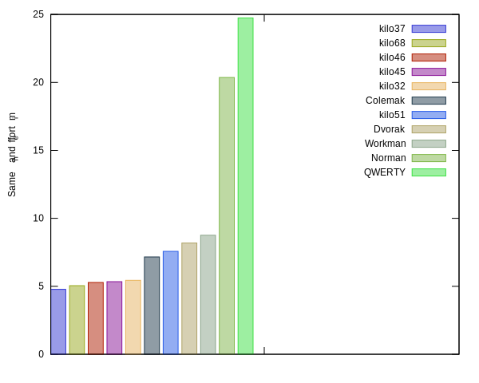

Philosophy
There are a lot of properties to consider for layouts, and design of a layout is subjective in many ways. There is no best layout. Still, there are layouts that are better than others. There are also bad layouts. The QWERTY layout fails on most comparison criteria. To start with, we can define the properties of a layout that are least subjective.
name: QWERTY
layout: qwertyuiop[asdfghjkl;'zxcvbnm,./
score: 1.35
positional_effort: 64.74
alternation: 47.89
text_direction: 50.49
same_hand:
jumps: 9.66
same_finger:
rp: 2.31
im: 8.77
adjacent-mrp:
inward: 3.62
outward: 4.00
balance: 64.23
rows: [50.67, 31.41, 17.77]
fingers: [8.13, 8.18, 19.09, 28.83, 0.00, 0.00, 11.29, 9.02, 12.96, 2.35]
indices: 40.12
middles: 28.11
rings: 21.14
pinkies: 10.48
Positional effort
The letters that are used most frequently, need to be
placed on the easiest keys to type. We use weights for effort
of each key. In kilo you can customize these weights but the defaults
for kilo look something like this:

As for placements of the keys, here is a heat map for QWERTY,

and another for Dvorak,
You can clearly see that Dvoark has better placement of the keys. kilo
calculates scores for positional effort, better layouts should have less effort scores.

NOTE: we can sacrifice a little positional efficiency for the sake of getting an overall better layout, but not too much.
Alternation
Some might argue that high alternation is not necessarily a good thing and that typing with one hand is as fast, if not faster. Still distributing the work on both hands must be better. I've experimented with lower alternation and the important scores that matter seem to be proportional to alternation scores. The top 100 alternation layouts seem to outperform others in all respects.
Same Hand
What is left after alternation, which when you go for high alternation is about 70%, is same hand effort, Here a few factors need to be considered.
Row Jumps
Jumps from top to bottom row or from bottom to top should be minimized since they break the flow of typing and force you to move your hands from their home position. So you want a small percentage of the your total effort to be row jumps.

Adjacent finger movement
Some adjacent finger movements are more difficult than others. The difficulty increases when it involves the weaker outer fingers of the hand. The index finger in general is strong enough. Adjacent index with the middle finger is not a worry, but for the rest of the fingers it matters. There are two types of adjacent movements. Inward and outward, outward being the one that is more difficult for most people so we would like to minimize that.

Same finger
Same finger for multiple keys also needs to be minimized but again we can break it into two parts, the Index and middle fingers are probably not a problem. But we should decide how much weight to give to them. Some layouts might choose to mostly minimize for pinky and ring fingers. It is not clear how much weight to give im fingers, though, so you can experiment with that.
And here if we want to consider also same index/middle fingers.
One thing that you will notice is that as you try to minimize one
factor the others might go up. So you need to make a decision
which factors matter most. The defaults for kilo favor minimizing
outward and jumps and same rp finger at the same time minimizing
the sum of these 3 factors as a whole but you can change these defaults.
And here we also add same index/middle fingers to the score, if
we decide to consider same_im.

Other factors
There are other factors to consider:
- Less works for pinkies and ring fingers.
- Try to layout the letters in the same direction of the language, so T H is better than H T, etc.
- Programmer layouts: I think this should be done manually by placing the characters you need outside the 32 main characters. Programmers still have to write documentation and other texts so they can build on a layout with the main 32 characters and customize the rest.
The kilo approach
By default kilo calculates statistics for each layouts and assigns a score. You can change the weights that control the internal scorer or write your own. Any scoring system will depend on your preferences and will be biased is some way. Sometimes, you might decide to select a layout that is not the highest scoring, but one that has good characteristics that you would like to see in a layout.